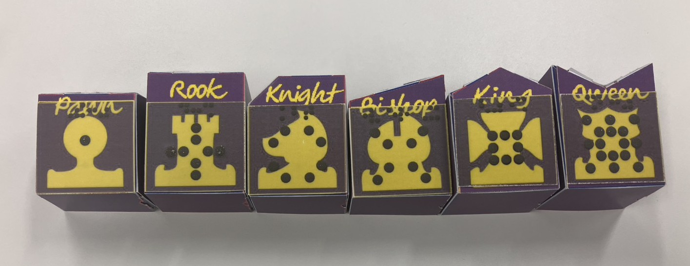
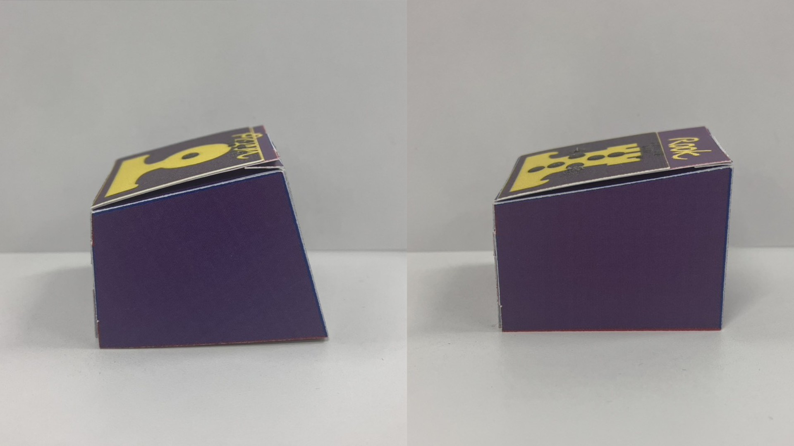
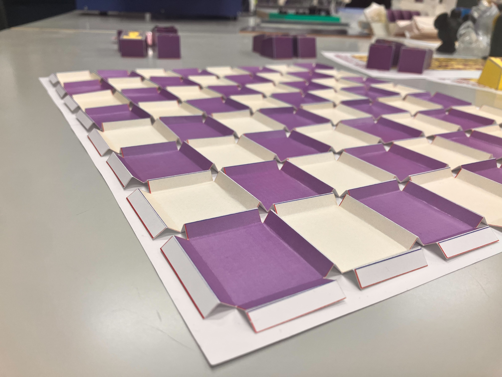
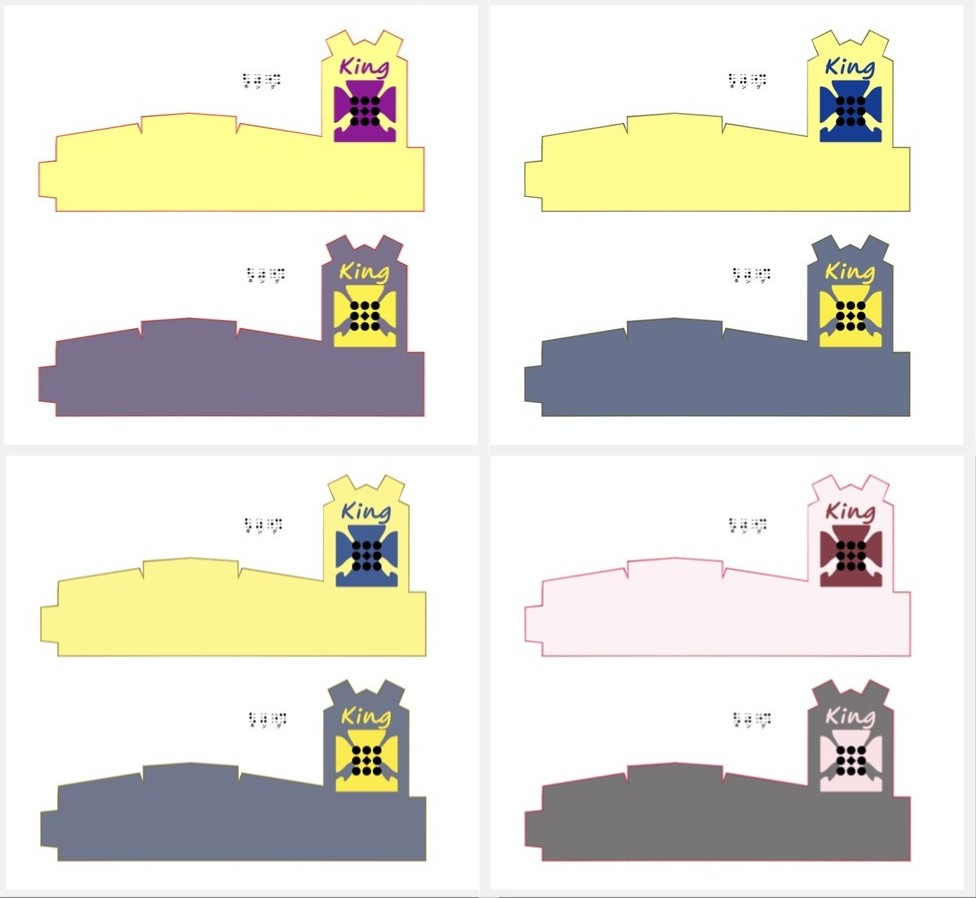
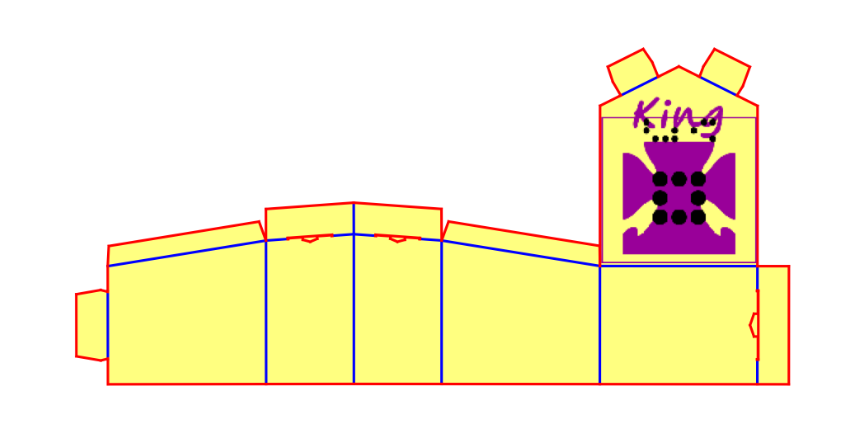

特筆すべき特徴
「触ってわかる!!おりがみチェス」では、誰もが対等に楽しめることを目指し、様々な工夫を施しています。
-
ペーパークラフト製
既存の視覚障害者向けのチェスでは木材を使用していたり、ターゲットとなる消費者の人口が少なく大量生産が困難なため[1]、基本的には高価なものが多いです。
そこで、本プロダクトは素材に紙を採用することで、材料費を抑えています（試作品においては、おおよそ600円程度で作成可能）。
-

-
独自の形状と突起
それぞれの駒は、独自に設計した形状を持ちます。
この駒の形状は実際に駒が動く方向からインスパイアされたものになっています（例えば、斜めに動けるビショップは、上から見たときに前面が斜めになっています）。
また、駒の上面には立体プリンタを用いて印刷された突起を貼り付けています。
この突起は、駒の移動方向を表す形状になっています。
このような特徴から、各駒を触覚によって認識・区別することが可能になります。
- 
-
自機・敵機の区別
駒の上面には傾斜を施しており、手前側よりも奥側が高くなっています。
その傾斜によって、駒が自分のものか相手のものかを判別することが可能になります。
- 
-
凸型の仕切り
盤面において、マスとマスの間には、凸型の仕切りを設けています。
これによって、駒を移動させる際にしっかりマス目に固定することができ、ずれにくくなります。
- 
-
配色の配慮
弱視の方や色覚において特性（1・2・3型色覚）を持っている方でも駒の敵味方が判別できるよう、黄色と紫色を採用しました。
右図はそれぞれ、
- 左上：色覚特性なし
- 右上：1型色覚
- 左下：2型色覚
- 右下：3型色覚
での、本プロダクトに対する見え方を表しています。
- 
-
「ツメ」構造
ペーパークラフトには「ツメ」の構造を採用しており、のりやテープといった道具を使わずに組み立てることが可能です。
ツメの差込口には半円形型の切り込みを入れ、ガイドとすることで、組み立てを容易にしています。
また、ツメには若干の返しを付けているため、差し込む際に「カチッ」とはまり、プレイする際にも抜けづらくなっています。
- 